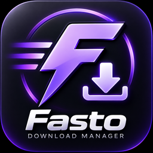
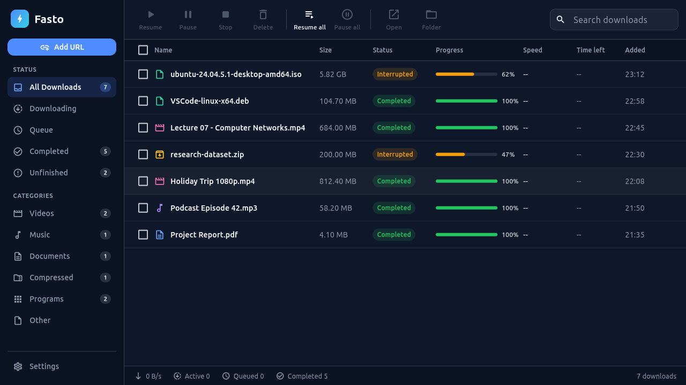

Multi-connection engine
Large files are split into up to 32 parallel segments, rebalanced while they run, and merged when done. Servers that don’t support ranges fall back to a single connection automatically.

Fasto DownloadNew · MP3 audio, link lists & sign-in downloads
Fasto splits every download into parallel connections, resumes after drops, grabs videos from web pages, opens magnet links and takes over downloads from your browser — free for Linux and Windows.

Features
Built on a Rust download engine with a native desktop app. No ads, no account, no tracking.
Large files are split into up to 32 parallel segments, rebalanced while they run, and merged when done. Servers that don’t support ranges fall back to a single connection automatically.
Stop any time and continue later — even after a restart. Dropped connections and rate limits are retried for you.
A “Download this video” button appears on supported pages. Pick a quality — or save just the audio as MP3.
Paste a magnet link or open a .torrent file and Fasto downloads it like any other file — with pause, resume and progress.
Downloads you start in Chrome, Edge or Brave move to Fasto with the right file name and your sign-in, so protected files work too.
Cap each download from 128 KB/s to 10 MB/s so browsing and calls stay smooth while big files come in.
Copy a link to a file — zip, mp4, pdf, iso or a magnet link — and Fasto offers to download it. Or just press Ctrl+V in the app.
Videos, Music, Documents, Compressed and Programs get their own view, and can be saved into their own folders.
Choose how many downloads run at once; the rest wait their turn. Resume all, pause all, or act on a selection.
No ads, no sign-in, no analytics. Fasto only contacts the sites you download from and GitHub to check for updates.
Browser integration
Install the Fasto extension and keep the desktop app installed. Fasto connects itself to Chrome, Chromium, Brave, Edge, Vivaldi and Opera the first time it starts — no setup scripts.
How it works
Windows installer, Ubuntu .deb or a portable archive.
From the Chrome Web Store or Edge Add-ons. Open Fasto once to connect it.
Click links, videos or magnets — they land in Fasto, organised and resumable.
Download
For 64-bit Windows 10/11 and Ubuntu 24.04 (other Linux distributions: use the portable archive). Install FFmpeg for video merging.
Every release lists SHA-256 checksums. All versions and notes are on
GitHub Releases.
On Ubuntu: sudo apt install ./Fasto-Linux-amd64.deb